MovieScout
A RAG movie recommender with Letterboxd importLetterboxd içe aktarımlı bir RAG film önerici
*semantic search over 10,000 films and a fix for silent truncation**10.000 film üzerinde anlamsal arama ve sessiz kırpma için bir düzeltme*I built a RAG recommender over the 10,000 most popular TMDB films. It imports Letterboxd history and removes films that the user already watched. I found and fixed a bug in which the embedding model ignored the last selected films.
En popüler 10.000 TMDB filmi üzerinde bir RAG önerici geliştirdim. Sistem Letterboxd geçmişini içe aktarır ve kullanıcının zaten izlediği filmleri çıkarır. Embedding modelinin son seçilen filmleri görmezden geldiği bir hatayı bulup düzelttim.
- stackteknoloji
- Flask · ChromaDB · Sentence-Transformers · Ollama · LangChain · Bootstrap 5 · pytest · GitHub Actions
1. The problem1. Problem
Most movie recommenders do not know which films a user already watched. MovieScout imports the Letterboxd history of the user and removes the watched films from the recommendations. The user can upload a Letterboxd ZIP export or a ratings.csv file, or type a public username.
Çoğu film önerici, kullanıcının hangi filmleri izlediğini bilmez. MovieScout, kullanıcının Letterboxd geçmişini içe aktarır ve izlenmiş filmleri önerilerden çıkarır. Kullanıcı bir Letterboxd ZIP dışa aktarımı veya ratings.csv dosyası yükleyebilir ya da herkese açık bir kullanıcı adı yazabilir.
2. Architecture2. Mimari
A Flask app has four blueprints: home, discover, chat and api. The recommendation engine uses Sentence-Transformers embeddings in ChromaDB. The chat uses the same index and sends the retrieved films to a local LLM through Ollama.
Bir Flask uygulamasında dört blueprint vardır: home, discover, chat ve api. Öneri motoru ChromaDB'deki Sentence-Transformers embedding'lerini kullanır. Sohbet aynı indeksi kullanır ve getirilen filmleri Ollama üzerinden yerel bir LLM'e gönderir.

3. How a recommendation works3. Bir öneri nasıl çalışır

- The engine embeds the title, overview and genres of each selected film separately with
all-MiniLM-L6-v2. - The engine calculates the average of these vectors. The average is one query vector.
- ChromaDB returns the nearest films. The engine requests three times the limit, or ten times the limit when a filter is active.
- The engine removes watched and selected films, applies the genre and rating filters and removes duplicates.
- The engine keeps the result in a cache for 10 minutes.
- Motor, seçilen her filmin başlığını, özetini ve türlerini
all-MiniLM-L6-v2ile ayrı ayrı embed eder. - Motor bu vektörlerin ortalamasını hesaplar. Ortalama tek bir sorgu vektörüdür.
- ChromaDB en yakın filmleri döndürür. Motor limitin üç katını, bir filtre aktifse on katını ister.
- Motor izlenmiş ve seçilmiş filmleri çıkarır, tür ve puan filtrelerini uygular ve tekrarları kaldırır.
- Motor sonucu 10 dakika önbellekte tutar.
4. Key decisions and trade-offs4. Kilit kararlar ve trade-off'lar
| DecisionKarar | Alternative I consideredDeğerlendirdiğim alternatif | ReasonGerekçe |
|---|---|---|
| Embed each film separately and averageHer filmi ayrı embed edip ortalamasını almak | Join all films into one textTüm filmleri tek bir metinde birleştirmek | The model has a 256-token limit. A joined text lost the last films without an error.Modelin 256 token sınırı vardır. Birleştirilmiş metin, son filmleri hata vermeden kaybediyordu. |
| Filter after retrieval with over-fetchFazla aday çekip getirmeden sonra filtrelemek | Filter inside the vector queryVektör sorgusu içinde filtrelemek | Genre data is a list of words. A larger candidate pool keeps enough results after the filters.Tür verisi bir kelime listesidir. Daha büyük bir aday havuzu, filtrelerden sonra yeterli sonuç bırakır. |
| Local LLM through OllamaOllama ile yerel LLM | A paid cloud APIÜcretli bir bulut API'si | The project has no running cost, and user history stays on the machine.Projenin işletim maliyeti yoktur ve kullanıcı geçmişi makinede kalır. |
The truncation bugKırpma hatası
The first version joined the text of all selected films and embedded the result. When a user selected more than about two films, the tokenizer cut the text at 256 tokens. Thus the last films had no effect on the result. The fix embeds each film separately and averages the vectors.
İlk sürüm, seçilen tüm filmlerin metnini birleştirip sonucu embed ediyordu. Kullanıcı yaklaşık ikiden fazla film seçtiğinde tokenizer metni 256 token'da kesiyordu. Bu yüzden son filmlerin sonuca hiçbir etkisi olmuyordu. Düzeltme, her filmi ayrı embed eder ve vektörlerin ortalamasını alır.
5. Testing and security5. Test ve güvenlik
- CI runs route tests for home, search, discover, import and export on each push. Unit tests cover the models and the Letterboxd importer.
MAX_CONTENT_LENGTHlimits each request to 25MB.- The ZIP importer checks the declared uncompressed size before it reads the archive. Thus a zip bomb cannot fill the memory.
- CI, her push'ta home, search, discover, import ve export için route testleri çalıştırır. Birim testleri modelleri ve Letterboxd içe aktarıcısını kapsar.
MAX_CONTENT_LENGTHher isteği 25MB ile sınırlar.- ZIP içe aktarıcısı arşivi okumadan önce beyan edilen açılmış boyutu kontrol eder. Böylece bir zip bombası belleği dolduramaz.
6. Results6. Sonuçlar
7. Design Q&A7. Tasarım Soru-Cevap
Why do you average the embeddings?Embedding'lerin ortalamasını neden alıyorsun?
The embedding model has a 256-token limit. One joined text loses the last films. Separate embeddings give each film the same weight in the query.
Embedding modelinin 256 token sınırı vardır. Tek bir birleşik metin son filmleri kaybeder. Ayrı embedding'ler, sorguda her filme aynı ağırlığı verir.
Why do you request more candidates than the limit?Neden limitten fazla aday istiyorsun?
The filters run after the vector search. Without extra candidates, the filters can remove most of the results.
Filtreler vektör aramasından sonra çalışır. Ek adaylar olmadan filtreler sonuçların çoğunu kaldırabilir.
How does the chat use RAG?Sohbet RAG'i nasıl kullanıyor?
FilmRAG embeds the message of the user and queries the same ChromaDB collection. It adds the 10 most relevant films to the system prompt of the local model.
FilmRAG kullanıcının mesajını embed eder ve aynı ChromaDB koleksiyonunu sorgular. En ilgili 10 filmi yerel modelin sistem prompt'una ekler.